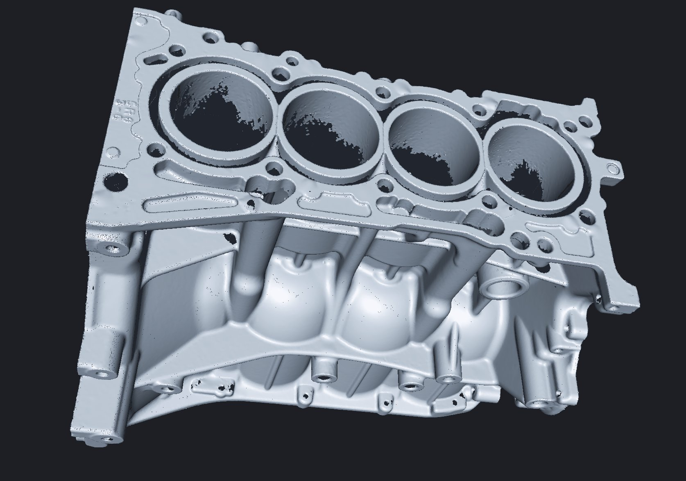
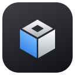
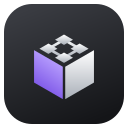
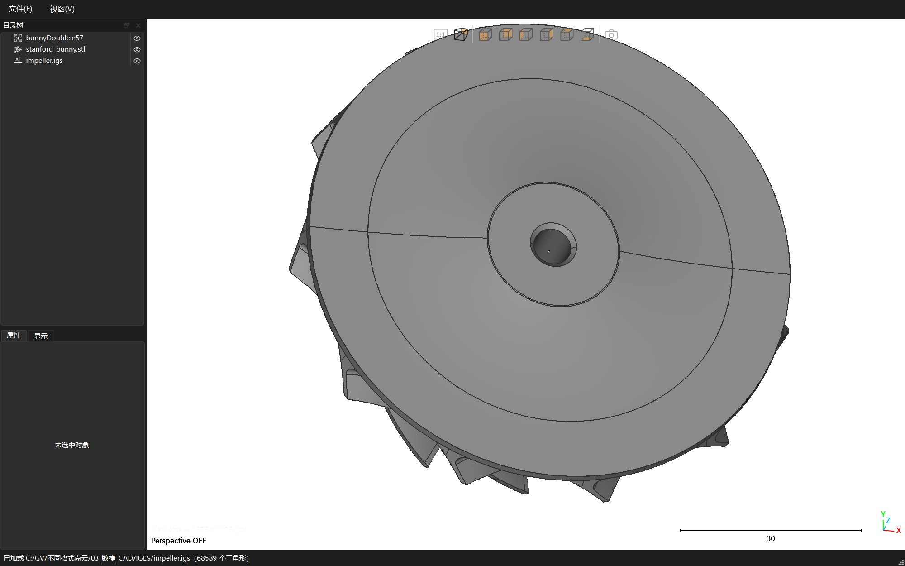
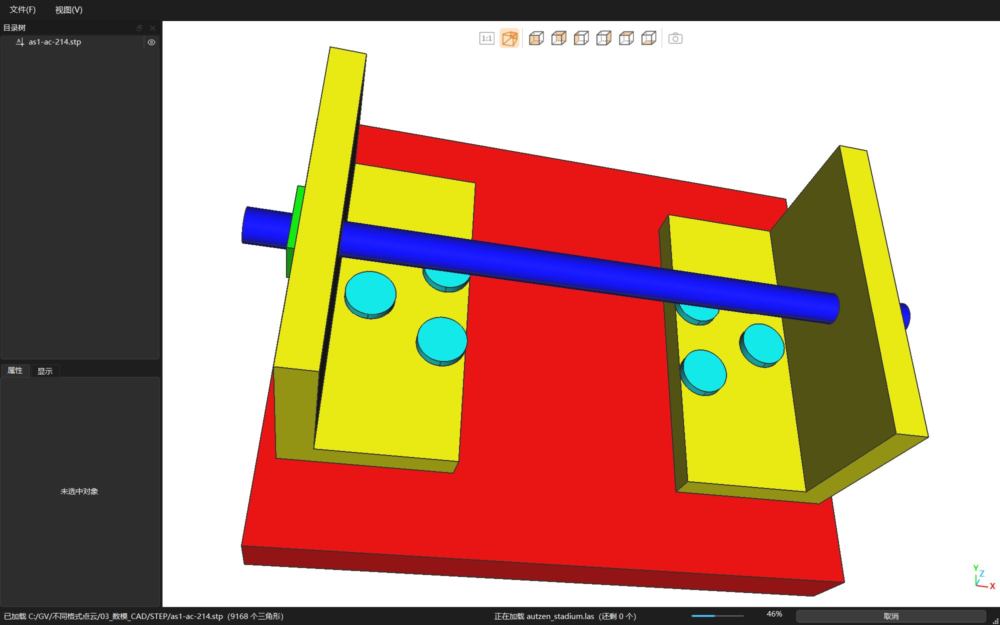
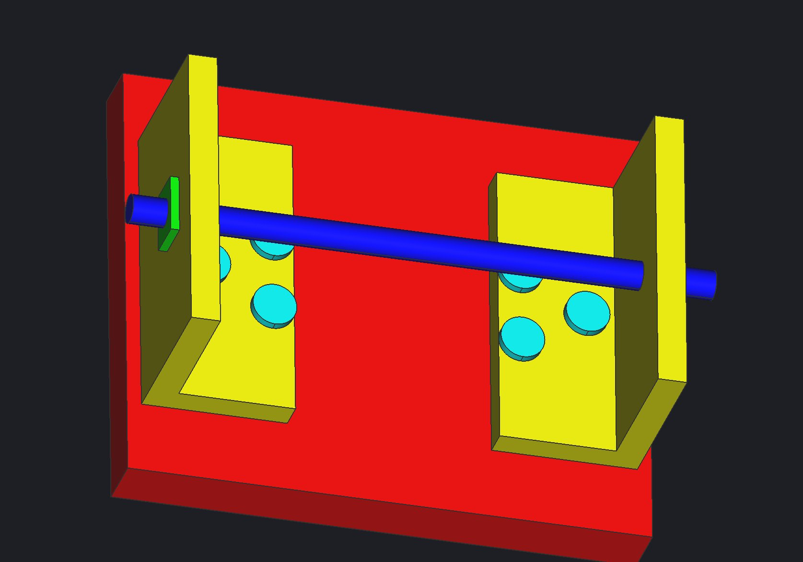
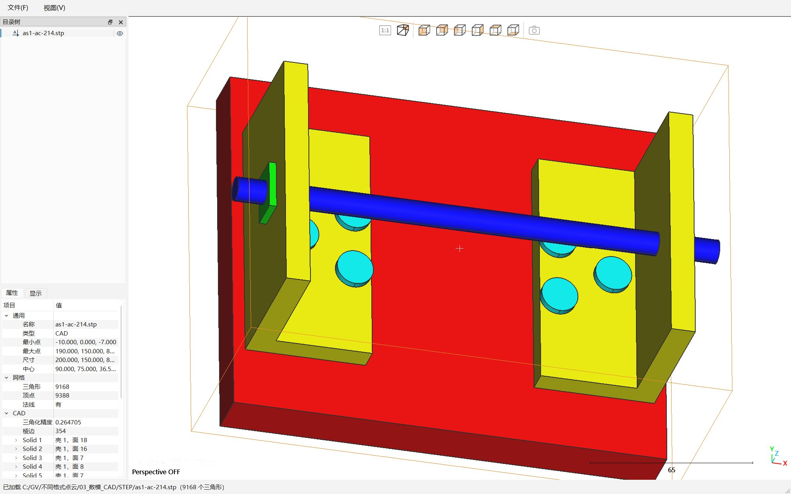

产品家族
同一套三维内核，从"只看"到"产线自动检测"。点开卡片查看要点。

Viewer
轻量三维查看器，点云、网格、CAD 一个窗口看完
可用
- 十余种格式
- 千万级点云后台加载
- STEP/IGES 实体显示
Lite 常用检测，开箱即用 规划中
- 保留核心的比对与测量
- 向导式操作，不用编程
- 适合单机日常检测
Studio 旗舰版：三维数据处理与检测 规划中
- 扫描数据与 CAD 比对，色谱显示偏差
- 特征提取与 GD&T 尺寸检测
- 检测报告一键生成

Dataflow
用节点图搭建检测算法
开发中
- 拖拽节点、连线即算法
- 点云、CAD、视觉三条链路
- 工程文件可复用
Workflow 让检测在产线上循环运行 开发中
- 步骤树编排
- 对接机械臂、相机、扫描仪
- 运行、暂停、单步调试
GeoVision Viewer
轻量三维查看器，点云、网格、CAD 一个窗口看完。
格式全
- 点云：LAS/LAZ、E57、PLY、PCD、XYZ 等文本
- 网格：PLY、STL、OBJ、OFF、3MF
- CAD：STEP、IGES、BREP
- 可另存为常用格式

大点云不卡
- 后台加载、进度可见、随时取消
- 只导入需要的属性，内存省三分之二
- 千万点流畅旋转

CAD 像设计软件
- B-rep 棱边、光滑明暗、保留 STEP 颜色
- 带边线着色、线框、消隐等 5 种显示形式

用起来顺手
- 目录树、属性与显示面板
- 拖放打开、视口截图
- 浅色/深色主题，中文界面

下载 Windows 版
首次运行若提示'Windows 已保护你的电脑'，点'更多信息 → 仍要运行'。
GEOVISION
空间几何智能研究团队
Spatial Geometry Intelligence Research Team
开发：Miracle Li